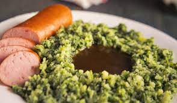

Te Gekke Stampot

Te Gekke Stampot. Voor als je echt wat te vieren hebt!
Stampot voor wanneer je eens een keer echt vrolijk wil doen. Lekker stampen die aardappels en dan vreten tot je er bij neer valt!
Deze stampot maakt dat je van alles weer het positieve gaat inzien! Dit is een stampot van oud hollandse top kwaliteit!
Ingredienten:
- 5 kilo Aardappels (Het dure zakje van het kruimelende soort)
- 1 kilo Zoet rijpe appels(Ook dure soort kopen)
- 1 kilo Rozijnen
- 1 kilo Ananas
- 600 gram Bastard suiker
- 20 gram Zout
- 20 gram Peper
- 1 liter (Knor) Kaassaus
Bereidingswijze:
- Schild de aardappels en kook ze in 5 liter water gaar, snijd de aardappels vervolgens in blokjes van 4 bij 4 centimer groot en bewaar ze in de stampot pan.
- Snijd net als de aardappels de appels en ananas in blokjes van 4 bij 4 centimeter groot en voeg deze ook toe aan de stampot pan.
- Lekker bezig! Nu flink stampen met de stamper a.u.b. Ben je moe? Neem dan tussendoor een pauze van zo'n 5 minuten. Gooi vervolgens de overige ingredienten in de stampot pan en stamp nogmaals flink voor zo'n 10 minuten lang!
- Serveer de stampot op mooie grote borden. Optioneel: garneer met een kuiltje jus (Jus van Hak is het lekkerste).
- Geniet van je super stampot! Wat een feest zo'n massa aardappels op je bord! Hier kun je wel een week van eten!